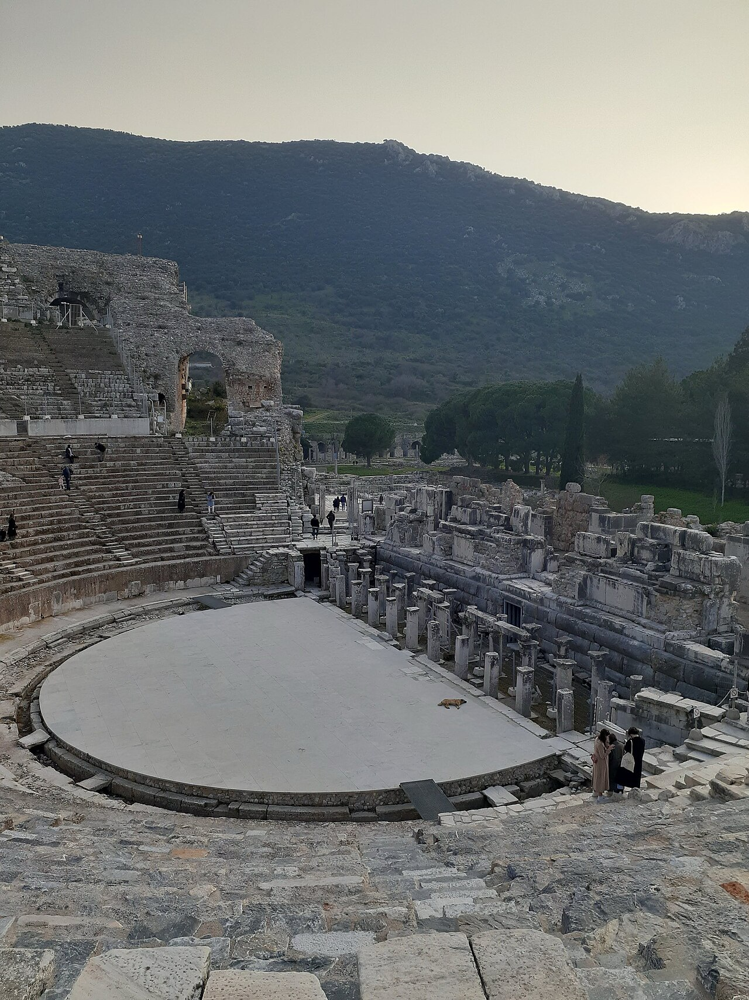

Ephesus Theater

- Find Name
- Ephesus Theater
- Historical Period
- Roman
- Artifact Date
- 1st century AD (rebuilt; original Hellenistic)
- Date Discovered
- 1895
- Discovery Location
- Ephesus, Türkiye
- Current Location
- In situ, Selçuk, Türkiye
- Timeline Era
- Early Church
- Description
- The great theater of Ephesus, seating about twenty-five thousand, excavated by Austrian archaeologists from 1895 and restored in the twentieth century. Its marble seats and stage building are the setting of the riot in Acts 19, when the silversmiths dragged Paul's companions into the theater and the crowd shouted for two hours.
- Biblical Significance
- Luke names the theater, the city clerk who calmed the crowd, and the assembly's confusion — and all three check out against the stones. The gospel's advance in Ephesus was not a quiet idea but a public disturbance in a real city's largest gathering place, and the building still stands to prove the city was that big and that loud.
- Evidence Class
- Direct
- Interpretations
- Scholars agree the theater is the one of Acts 19; its present form is largely Roman rebuilding, with Hellenistic origins beneath.
- Scripture Illuminated
- Related People
- Related Books
- Related Places
Awaiting Review Not yet checked against scholarly sources. Treat its claims as provisional until this entry is reviewed. About verification
Last reviewed: not yet reviewed